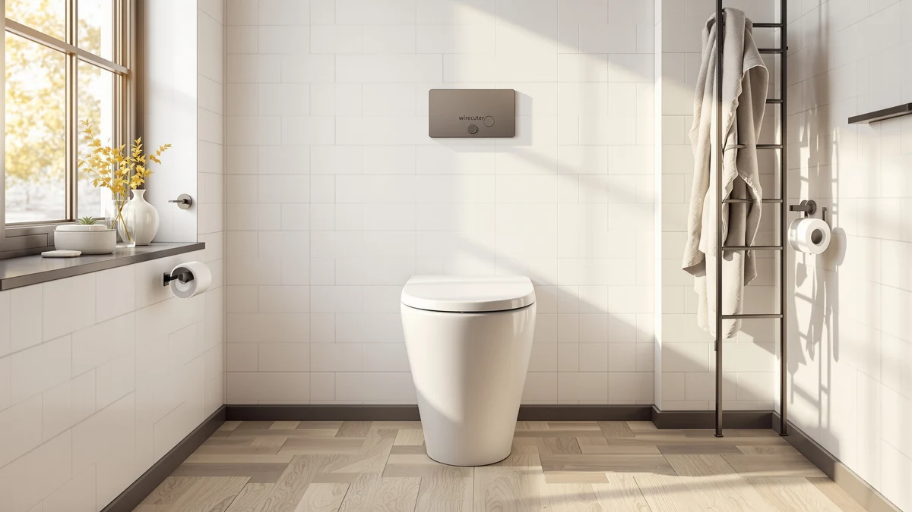

How to Clean Toilet Water Tank: Complete Guide (2026)
Prices and picks verified as of September 2026. Independent, reader-supported reviews.


Things to Know Before You Buy
- A full toilet tank cleaning takes about 40 minutes and costs around $10 in vinegar and baking soda.
- Most tanks need a deep clean every three to four months, or every six to eight weeks with hard water.
- Vinegar removes mineral rings and slime without the damage bleach causes to the rubber flapper and seals.
- You never need to remove the tank from the bowl. Every step happens with the tank in place.
- Shutting off the supply valve first keeps the tank from refilling while you are still scrubbing it.
Knowing how to clean toilet water tank buildup properly saves you a service call for problems a scrub brush and some vinegar can fix on their own. Mineral rings, black mold, and pink bacterial film form inside a toilet tank for the same reason they show up in a coffee maker or a shower: standing water, warm humidity, and time. Left alone, that buildup coats the flapper and the flush valve, and a dirty valve is one of the more common reasons a toilet starts running longer than it should or flushes weaker than it used to.
This guide walks through five steps, from shutting off the supply valve to testing the flush when you're done. Set aside about 40 minutes and expect to spend roughly $10 on supplies you likely already keep under the sink. None of it requires removing the tank or calling a plumber, and once you've done it once, a repeat cleaning goes faster because you already know where the grime tends to collect.
What You'll Need
- Supplies: distilled white vinegar, baking soda, and microfiber cloths
- Tools: a stiff-bristle tank brush and rubber gloves
Check under the sink before you start. Most households already have vinegar and baking soda on hand, and a dedicated tank brush costs a few dollars if you don't own one. Skip the bowl brush for this job. Its bristles are usually too soft to lift dried mineral deposits off the tank walls.
Step 1: Shut off the water supply and drain the tank
Locate the shutoff valve on the wall or floor behind the toilet and turn it clockwise until it stops. This cuts the water line feeding the tank, and it's the step people skip most often, usually right before they flood the bathroom floor.
Flush the toilet once with the supply off to drain most of the water out of the tank. Reach in and hold the flapper open for a few seconds afterward so the last inch or two of standing water drains into the bowl instead of sitting at the bottom.
With the water off and the tank mostly empty, you're set up to work without the tank refilling underneath you halfway through the job.
Step 2: Remove the tank lid and sponge out standing water
Lift the tank lid straight up with both hands and set it down on a towel somewhere it won't chip or crack. Porcelain lids are heavier than they look, and a bathroom counter or the closed toilet seat both work as a safe spot.
Look inside the toilet water tank before you touch anything else. You'll see the fill valve on one side, the flush valve and flapper in the center, and an overflow tube standing next to it. Sponge out whatever water is still pooled at the bottom so you're working with a dry surface.
Take a photo with your phone if the layout looks unfamiliar. It's a useful reference once everything is wet and soapy and you need to remember where each part sits.
Step 3: Scrub the tank walls with a vinegar solution
Pour two to three cups of distilled white vinegar into the empty tank and use the stiff-bristle brush to work it across the walls and the bottom. Vinegar's acidity breaks down the calcium and lime deposits that build up along the waterline ring, which is usually the most stained part of the tank.
For rings that don't lift right away, sprinkle in a few tablespoons of baking soda. It reacts with the vinegar and creates a light foaming action that helps loosen crusted mineral buildup, then let the mixture sit for about 15 minutes before you scrub again.
Avoid steel wool or anything abrasive enough to scratch the tank's interior surface. A scratched tank collects grime faster on the next round, which turns a quarterly clean into a monthly one.
Step 4: Clean the flush valve, flapper, and overflow tube
Wipe down the flush valve seat where the flapper sits, since mineral crust here is the reason a lot of toilets develop a slow leak or a phantom flush that runs on its own every few hours. A buildup-free seal lets the flapper close flush against the valve instead of resting on a ridge of grime.
Clean the flapper itself with a damp cloth on both sides, checking for cracks or a chalky texture while you're at it. A flapper that's gone stiff or brittle won't seal properly no matter how clean the rest of the toilet water tank is, and it's worth replacing rather than continuing to fight around.
Finish with the overflow tube, wiping around its rim and down a few inches inside where slime tends to collect out of sight.
Step 5: Rinse thoroughly, refill, and test the flush
Rinse the tank with a few cups of clean water, swirling it around and dumping it out to carry away any leftover vinegar, baking soda residue, or loosened grime. Sponge out the last of it so nothing sits at the bottom once you turn the water back on.
Turn the shutoff valve counterclockwise to restore the water supply and let the tank refill fully. Flush two or three times in a row and watch how the water drains and the tank refills. A clean flush valve and flapper should seal quietly with no hissing or trickling once the tank tops off.
Set the lid back in place, and you're done. If you followed each step, the water inside the tank should look clear and the flush should feel and sound the same as it did when the toilet was new.
Common Mistakes to Avoid
Pouring bleach into the toilet water tank is the mistake that causes the most damage. Bleach degrades the rubber flapper and the seals around the flush valve, and a degraded flapper leads to a leak or a toilet that runs constantly within a few months. Stick with vinegar, which handles the same buildup without breaking down rubber parts.
Skipping the shutoff valve is another one. If you start scrubbing while the fill valve is still active, the tank keeps refilling as you work, diluting your cleaner and turning a 40-minute job into an hour of fighting rising water.
Scrubbing with steel wool or an abrasive pad scratches the tank's interior surface. Once scratched, that surface holds onto mineral deposits and grime faster than before, so buildup returns sooner than it would after a gentle brush.
Ignoring the overflow tube is a gap even careful cleaners fall into. It sits in plain sight but gets skipped because it doesn't look dirty from above, even though slime often collects a few inches down inside it.
Finally, forgetting to check the flapper's condition wastes the whole effort. If the rubber has gone stiff or cracked, no amount of scrubbing fixes the seal, and the tank keeps running until the flapper itself gets replaced.
Our Top Picks
If quarterly tank scrubbing isn't something you want to keep doing, a few one-piece toilets cut the job down or remove it entirely. The picks below range from a glaze that resists mineral buildup to fully tankless designs with no tank interior to clean at all.

Editor's Pick
TOTO Legato WASHLET+ One-Piece Elongated
TOTO's CEFIONTECT glaze sheds mineral deposits before they set, so the routine vinegar scrub takes less effort than it does on a standard porcelain tank.
$1,330.00
Check Price on Amazon
Best Value
Smart Toilet with Bidet Built
This model skips the traditional tank entirely, so there's no interior to scrub, descale, or check for a worn flapper.
$379.99
Check Price on Amazon
Premium Choice
WITMYA Smart Toilet with Bidet
The tankless build pairs with a foot-sensor flush, which means fewer surfaces to touch and no tank to add to your cleaning rotation.
$379.99
Check Price on AmazonFrequently Asked Questions
How often should you clean a toilet water tank?
Clean the tank every three to four months in most homes, and every six to eight weeks if you have hard water. Mineral deposits and slime build up faster in hard-water areas, so the flapper and overflow tube need more frequent attention there.
Is it safe to use bleach inside a toilet tank?
Skip bleach in the tank. It degrades the rubber flapper and other seals over time, which leads to leaks and constant running. White vinegar or a tank-safe cleaning tablet handles the same buildup without breaking down the components.
Why does my toilet tank have black or pink slime?
Black grime is usually mold feeding on standing moisture, and pink residue is a bacteria called Serratia marcescens that thrives in humid bathrooms. Both clear up with a vinegar scrub, and staying on a regular cleaning schedule keeps them from returning.
Can hard water stains inside the tank affect the flush?
Yes. Mineral crust that builds up around the flush valve seat keeps the flapper from sealing tightly, which shows up as a weaker flush or a tank that runs longer than it should between uses.
Do you need to turn off the water to clean the tank?
Yes. Shutting off the supply valve first keeps the tank from refilling while you're scrubbing, which would otherwise dilute your cleaner and leave you working in a partly full tank.
Verdict
Once you know how to clean toilet water tank buildup the right way, the whole job takes about 40 minutes and costs roughly $10 in vinegar and baking soda. Shut off the water, drain and empty the tank, scrub the walls with vinegar, clean the flush valve and flapper by hand, then rinse, refill, and test the flush. Skip the shutoff step or reach for bleach instead of vinegar, and you either flood the floor or shorten the life of the rubber seals you're trying to protect.
If you're on this routine every few months and the tank still stains fast or the flush keeps weakening, the toilet itself may be working against you. A skirted, fully glazed design, like the TOTO Legato featured above, resists mineral buildup better than a standard tank and cuts down how often you need to repeat this whole process.